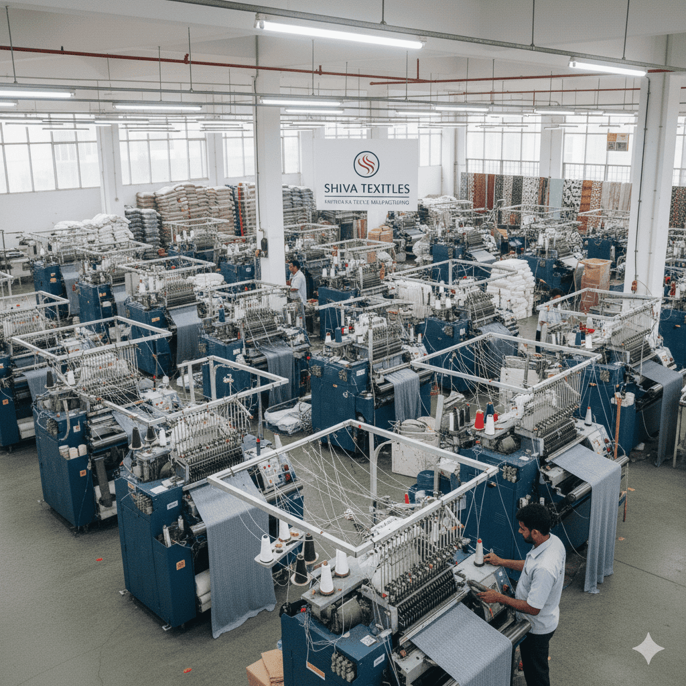

30+
Countries served
About Win Corp
Win Corp is a Coimbatore-born consulting partner helping textile entrepreneurs and manufacturers set up, scale, and future-proof factories across the globe – from first machine to steady-state flow.
Win Corp — By the Numbers
30+
Countries served
150+
Machinery partners
50+
Installation projects
18
Indian states covered
Impact & Reach
A proven implementation record across continents, customer segments, and factory scales.
Completed across project consultancy, technology transfer, and machinery installation — delivering predictable outcomes for first-time and seasoned entrepreneurs alike.
From India to Thailand, Indonesia to Egypt, Bangladesh to Vietnam — Win Corp carries best practices across geographies and adapts them to local realities.
Deep relationships with world-class brands from Germany, Italy, Switzerland, Japan, and Korea ensure the right technology fit and long-term support.
Direct machinery installation, commissioning, and service support delivered globally — aligned to safety, quality, and audit-ready standards.
Expertise Portfolio
30 major implementations including Shahi Exports, Pee Gee Fabrics (Centwin Group), and Gangotri Textiles Ltd.
14 international projects across 6 countries — elevating teams and processes.
50+ facilities commissioned from knitting to finishing across 18 Indian states.
Geographic Footprint
From Tamil Nadu’s knitwear belt to export-driven hubs in Southeast Asia and Africa.
Major city projects in Mumbai, Kolkata, Chennai, Bangalore, Hyderabad, and Ludhiana.
Multi-country experience ensures cultural sensitivity and region-specific compliance.
Technical Excellence
Experience across 11+ knitting technologies (Mayer & Cie, Terrot, Pailung, Shima Seiki), 6+ pretreatment systems (Dornier, Erbatech, Bianco), and 11+ dyeing brands (Thies, Then, Sclavos, Fongs).
13+ finishing equipment types (Santex, Bruckner, Monforts) and 12+ laboratory equipment brands (Mathis, Datacolor, SDL) for end-to-end process reliability.
19+ utility systems including Thermax, Forbes Marshall, and Atlas Copco – balancing productivity with sustainability and operating costs.
Industry Segments Served
Full-line knitwear implementations for export and domestic brands.
Dyeing, washing, and finishing units engineered for buyer compliance.
Cut-to-pack garment units aligned to audit-ready workflows.
Process houses with robust utilities and shade reproducibility.
Global buyer–driven standards translated into shop-floor systems.
End-to-end plants from fibre to finished fabric and garments.
Trusted by Export Leaders
From India’s largest export houses to focused niche mills, Win Corp is the quiet partner behind factories that run on time, on spec, and on buyer standards.
Leading Export Houses
Established Groups
International Brands
Why These Numbers Matter
Behind every statistic is a factory that needed more than theory – they needed execution.
Every one of the 94+ implementations adds to a living playbook – what works, what fails, and what to avoid in your context. You don’t just get advice; you get patterns that have already been proven in plants like yours.
With 150+ machinery partners and 50+ installations, Win Corp operates inside a mature ecosystem of OEMs, vendors, and service teams – reducing your risk on spares, service, and technology upgrades.
From startup knit units to large integrated mills, from export houses to process-only plants – the mix of industry segments served means solutions are tuned to your scale, not copy–pasted from elsewhere.
Work across 30+ countries brings in global best practices. Those are then filtered through local realities – labour, power, water, compliance – so your plant is world-class without being unrealistic.

Founder , WinCorp
Founder’s Message
"With over 94 successful implementations across 30+ countries and partnerships with 150+ machinery manufacturers, Win Corp has become synonymous with textile manufacturing excellence. Our journey from Coimbatore to becoming a global consulting force reflects our commitment to transforming the textile industry, one factory at a time."
Mr Shanmugam Venugopal
Founder, Win Corp Consulting
Our Promise
We partner with you through every stage of the textile manufacturing journey, backed by a proven track record and deep technical expertise.